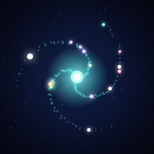

Trance サポート
集中するほど、自分だけの銀河が育つ
不具合のご報告には、端末、iOS、アプリのバージョンもご記載ください。
よくある質問
集中中に別のアプリを開いたり、画面を消したりできますか？
初期設定では問題ありません。タイマーは動き続け、終了時に通知します。集中ガードを有効にすると、セッション中にアプリを離れたり画面を消したりした場合、そのセッションの星が薄くなります。
薄くなった星を削除できますか？
「マイ銀河」で薄い星をタップし、ゴミ箱アイコンをタップしてください。
集中時間を細かく設定するには？
タイマーリングを回すと1分単位で調整できます。1周は60分、最大180分です。中央の時間表示をタップしてホイールから選ぶこともできます。
集中サウンドが聞こえません。
設定 → 集中サウンドで音を選び、端末の音量をご確認ください。集中画面右上のスピーカーボタンからも変更できます。
ウィジェットやロック画面のタイマーが表示されません。
ホーム画面を長押ししてTranceウィジェットを追加してください。Live Activityは集中開始後、ロック画面と対応端末のDynamic Islandに表示されます。
データはほかの端末と同期されますか？
現在、集中履歴と銀河は端末内だけに保存されます。端末間の同期にはまだ対応していません。
Tranceは無料ですか？
はい。現在のバージョンはすべての機能を無料で利用でき、広告もありません。